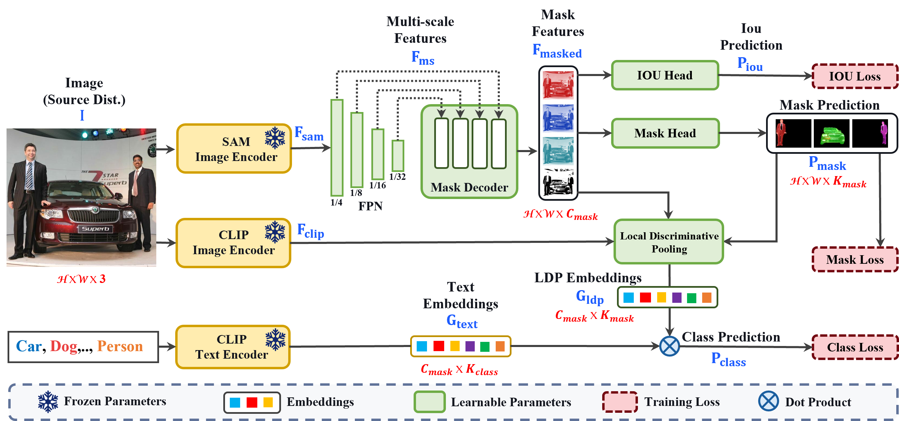

PosSAM Framework

Overview of our PosSAM training pipeline. We first encode the input image
using the SAM backbone to extract spatially rich features, which are processed through
a Feature Pyramid Network to obtain hierarchical multi-scale features decoded to form
mask features and predict class-agnostic masks. Concurrently, we train an IoU predictor
for each mask to measure its quality. For classification, using our proposed LDP module we enhance
discriminative CLIP features with class-agnostic SAM features for an unbiased OV classification. These LDP features are then classified by a standard open-vocabulary
supervision with ground truth category labels derived from the CLIP text encoder.